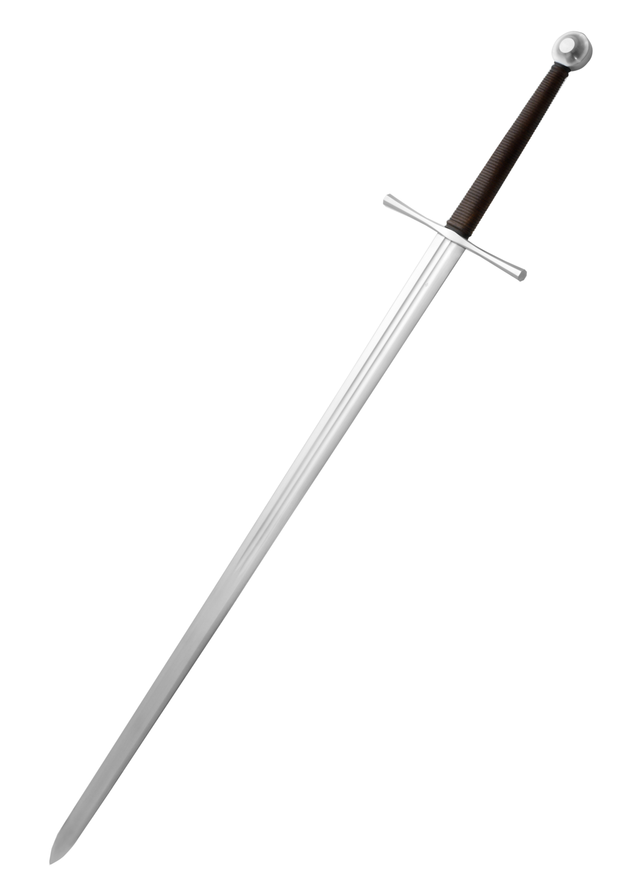
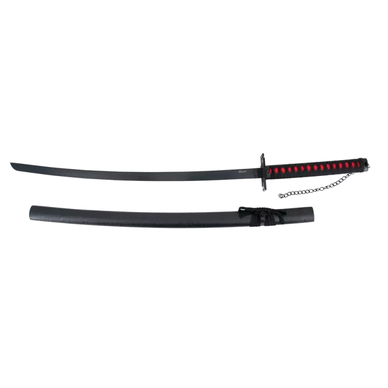
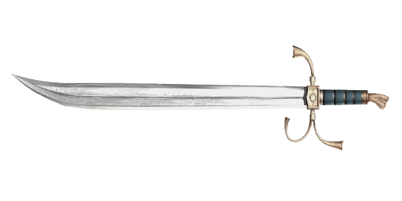

Alguns tipo de espadas

Espada Medieval
A espada medieval é o tipo de espada mais conhecida pelo mundo sendo caracterizada pelo curto alcance, lâmina comprida e perigosa.
Ver mais


Cimitarra
Também caracterizada pela lâmina curva e típica do lado oriental do mundo, sendo mais específico, na pérsia
Ver mais
Espadas duplas
Como o nome ja diz, é caracterizada por ser uma arma dupla, uma em cada mão.
Ver mais